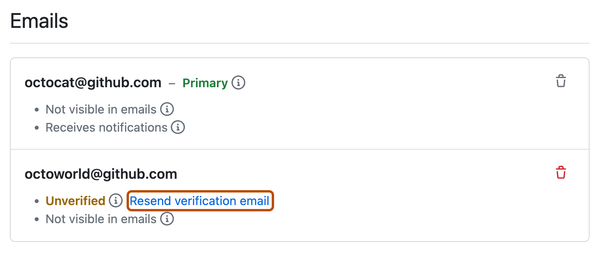
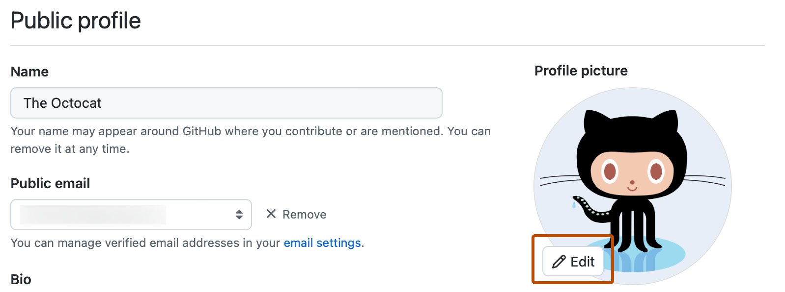
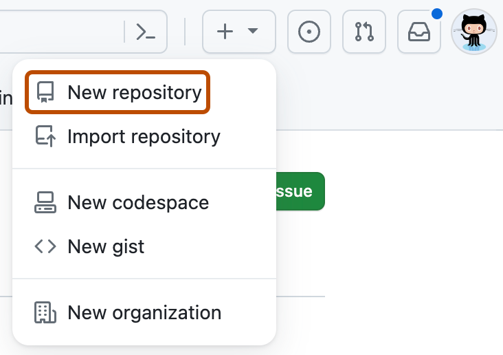
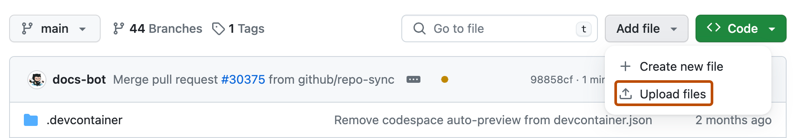
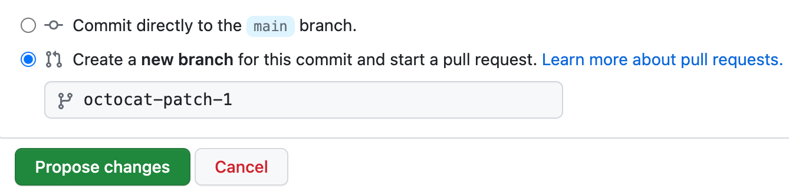
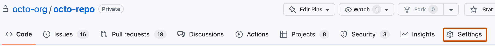
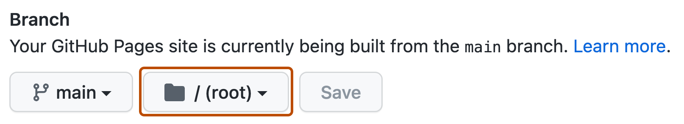

SEE IT / DO IT YOURSELF
From a file.
To a link.
Start by creating your GitHub account and profile. Then upload your HTML project and publish it with GitHub Pages, all in your browser.
About the screenshots
Real screenshots from the official documentation. The images show the providers' example projects; your project names and content will differ. Open the tool alongside this guide.
One step at a time. Keep the real tool open beside this guide.
Already have a verified account? Skip to creating your repository →
STEP 01 / ACCOUNT
Create your GitHub account.
Your account is your login. Its username identifies you on GitHub. A repository is a separate place for a project’s files; we will create that after your account is ready.
Open GitHub’s real sign-up page ↗
- Enter an Email address whose inbox you can open now.
- Choose a Password that meets the rules shown on the page.
- Choose an available Username. This is your public GitHub handle and will appear in the website address you make later.
- Select your Country/Region. Choose whether you want product-update emails.
- Complete any account-verification challenge, then select Create account. Follow the remaining prompts.
GitHub also offers Google and Apple sign-up. If you choose one, follow that sign-in flow. Use your existing account if you already have one.
Check your screen: GitHub asks you to verify your email or takes you into your new account. Continue to the email step before creating a repository.
Enter your login details only on GitHub. This guide never asks for your password. GitHub’s official account instructions ↗
STEP 02 / EMAIL
Verify your email and sign in.
- Open the inbox for the address you used. Find GitHub’s verification email; check spam or junk if needed.
- Follow the verification instructions in that email and on GitHub’s page. If a code is requested, enter it on GitHub.
- Return to GitHub. If you are signed out, open GitHub Sign in and use the same account or sign-in method.
If the email has not arrived, open your profile-picture menu at the top right, choose Settings → Emails, then Resend verification email.

Check your screen: GitHub confirms verification and you can access your signed-in account. Verification is needed for tasks such as creating a repository.
STEP 03 / PROFILE
Find and set up your public profile.
Your profile introduces your account to other people. It is different from the website you will publish later.
- Open the profile-picture menu at the top right and select Settings. Open Public profile, or use the button below.
- In Name, enter the name you want displayed publicly. It does not have to be your legal name.
- Optionally add a short Bio, such as “Digital Culture student experimenting with interactive stories.” Select Update profile to save your changes.
- A picture is optional. Under Profile Picture, choose Edit → Upload a photo…, select an image, crop it and choose Set new profile picture.
- Open
https://github.com/YOUR-USERNAME, replacing the last part with your own username. This is your profile address.
Open your Public profile settings ↗

Check your screen: You recognise your account and username. You can now create a repository for your webpage. You do not need a photo or a finished bio to continue.
STEP 04
Create your own repository.
A repository holds your project's files and change history on GitHub. Sign in to your own account.
Open New repository on GitHub ↗

Name it something memorable, such as my-future-world. Choose Public for this GitHub Pages exercise on a free account, enable Add a README file, then select Create repository.
Check your screen: Your username, project name and a README appear. Public means other people can read the files. Use material you want to share publicly.
STEP 05
Upload your website files.

- Choose Add file → Upload files.
- Open your project folder on your computer. Drag
index.htmland any CSS files and image folders into the upload area. Upload the contents so index.html is at the top level. - Write a short message describing the change.
- Choose a new branch, such as
my-first-page, then select Propose changes.

Check your screen: Your files are included in the proposed change.
STEP 06
Bring your change into main.
Complete the proposal with Create pull request. Review the files. In your own practice repository, choose Merge pull request → Confirm merge when the change is right.
See GitHub's actual pull request and merge example ↗
Check your screen: Go to Code and select main. index.html should now appear in the file list on main.
STEP 07
Enable GitHub Pages.

- Choose Settings → Pages in your repository.
- Under Build and deployment → Source, select Deploy from a branch.
- Under Branch, choose main. Select /(root) as the folder, then Save.


Check your screen: main and /(root) are selected as the publishing source.
STEP 08
Open the published website.
Wait for publishing to finish. Open the website link shown in Settings → Pages. A typical project address is:
https://YOUR-USERNAME.github.io/YOUR-PROJECT/Check your screen: The link opens your website, not GitHub’s file list. Open it while signed out too, and try the interaction.
I see a 404 or an old version.
Check that index.html is on main in /(root), that the filename is lowercase and that publishing has finished. Look under Actions for the deployment status, then try again.
When you change files in VS Code later, you also need to upload those changes to GitHub. Saving locally and publishing online are separate actions.